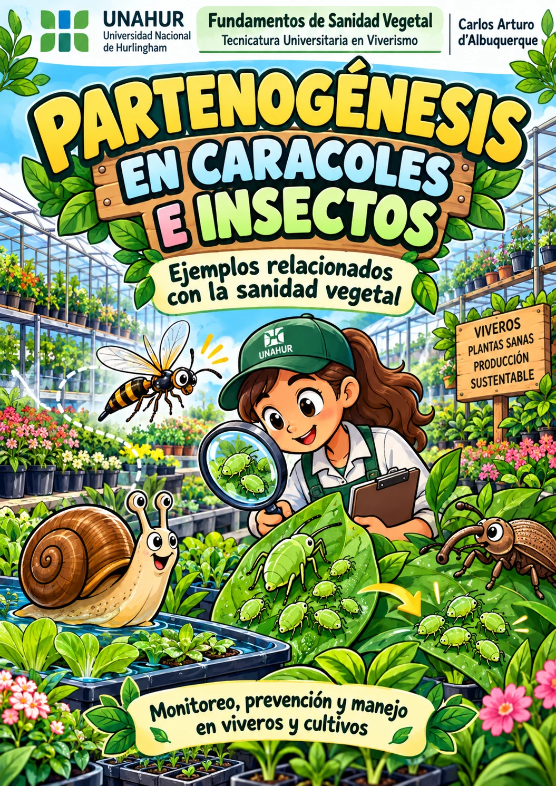

UNAHUR · VIVERISMO · GUÍA DE ESTUDIO 07
Reproducción, colonización y sanidad vegetalPARTENOGÉNESISen caracoles
e insectos.
Descubrí cómo puede originarse descendencia sin fecundación y qué relación tiene con las poblaciones, los viveros y el manejo integrado.

ANTES DE EMPEZAR
Una definición. Distintos mecanismos.
Partenogénesis es el desarrollo a partir de un óvulo no fecundado. Sus efectos y mecanismos varían entre organismos; no todo ejemplo representa clonación idéntica.
El recorrido conserva el orden 1–20 de estas láminas. Las imágenes se muestran completas y las precisiones científicas se distinguen en las fichas y al final de la guía.
01 / TU RECORRIDO DE ESTUDIO
Del 01 al 20, siguiendo las láminas.
Elegí una ficha o avanzá paso a paso. Podés marcar las que ya repasaste.
02 / ENCONTRÁ LAS DIFERENCIAS
Una mirada, muchas pistas.
Buscá conceptos, especies y temas sin perder el orden del índice.
| Lámina | Idea o ejemplo | Para recordar | Grupo | Descripción |
|---|
Los contenidos siguen las láminas; las precisiones evitan generalizar mecanismos o asociar automáticamente alas con reproducción sexual.
COMPARACIÓN INTERACTIVA
Un concepto, tres ejemplos.
Elegí un caso para distinguir reproducción clonal, arrenotoquia y poblaciones de caracoles.
Los esquemas ayudan a estudiar y no sustituyen la identificación del organismo y su biología específica.
03 / HACÉ MEMORIA
Leé la pregunta.
Recordá la idea.
Una tarjeta por tema, en el orden del índice. Intentá responder antes de darla vuelta.
04 / DESAFÍO DEL JARDÍN
Treinta preguntas para conectar ideas.
Veinte preguntas siguen las láminas y diez integran los conceptos. Aprendé con cada explicación.
TU MATERIAL DE CONSULTA
Veintiuna láminas para explorar.
Portada y veinte láminas de contenido en orden. Pequeñas, proporcionadas y con descripción. Tocá para ampliar.
PRECISIONES PARA ESTUDIAR
Conservamos las imágenes. Aclaramos los conceptos.
- n y 2n son juegos cromosómicos. En Apis mellifera, los valores habituales son n=16 y 2n=32. La notación n=1 y 2n=2 de la lámina 17 es una simplificación gráfica incorrecta como recuento. Penn State: genética de abejas.
- Las alas no determinan el modo reproductivo. Existen pulgones alados que se reproducen por partenogénesis. La alternancia estacional varía con especie y condiciones. UC IPM: biología de pulgones.
- No todos los caracoles son partenogenéticos. En Potamopyrgus antipodarum se describen poblaciones partenogenéticas; no se extrapola a cualquier caracol. USGS: ficha de la especie.
- Partenogénesis no equivale siempre a clonación idéntica. Depende del mecanismo. Tampoco equivale a autofecundación; «sin fecundación» es la distinción central.
- Los ácaros son arácnidos. Se mantienen como ejemplo mencionado en las imágenes, diferenciándolos de los insectos.